Xenko 1.5 release notes
Highlights
Skeleton asset
A new Skeleton asset (*.xkskel) has been introduced. Both models and animations now hold a reference to a skeleton. This allows to reuse the same skeleton definition in multiple assets and to retarget models and animations to different skeletons.
Skeletons can be created alongside other assets, when importing an FBX file or other model format.
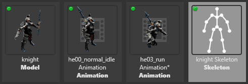Root motion support for models, cameras, lights, etc.
Animations now apply root motion if they have no skeleton, or the ‘Root Motion’ property is enabled on the animation asset. The animation will then move the entity itself, instead of the skeleton's root bone. This is especially useful to import animations of lights, cameras or unskinned models, without the need to bind them to the bones of a skeleton.
The FBX importer will now also import animations of various camera parameters (near-plane, far-plane, field of view) and apply them to the CameraComponent of the animated entity. More properties may be supported in the future.
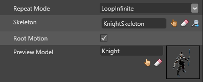New animation update system
The animation system now internally uses a new UpdateEngine to update objects. This allows us to animate arbitrary properties of entities, while accessing them in a highly efficient way. It will be the foundation for a future animation curve editor inside the GameStudio.
The new ‘Animated Properties’ sample demonstrates how to create animations of any property from a script.
Simple Profiling system
It is now possible to visualize profiling information of all the game systems and custom profilers directly within your running games. To get started, use the Game Profiler built-in script, attach it to an entity and when the game is running press LCtrl-LShift-P.
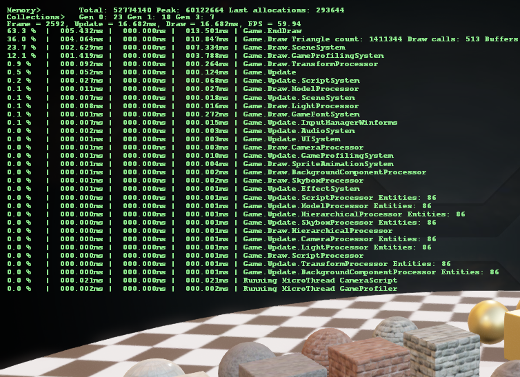Physic debug shapes at runtime
It is now possible to enable the rendering of physics collider shapes during runtime. The debug shapes are normal entities and they must be enabled for each physics shape that requires it. The best way to start with this feature is to use the Physics Shapes Render built-in script and attach the script to any entity that has a Physics Component and when the game is running press LCtrl-LShift-P.
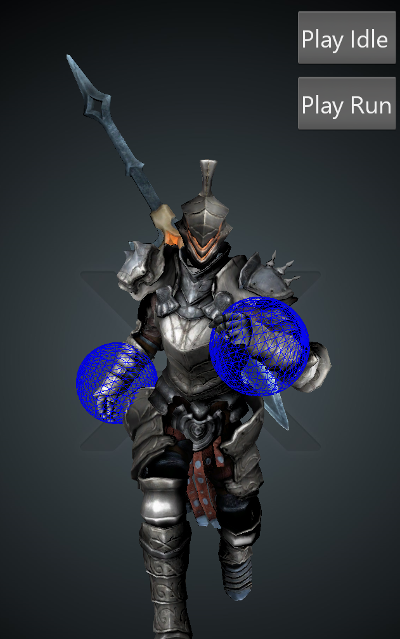Asset View
The Asset view has been improved to help you better organize and manage your assets.
New ‘view options’ menu
The view options are gathered in a single menu accessible from the asset view toolbar.
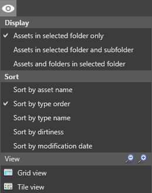You can display all the assets in the current folder only, in the current folder and its sub-folder. The third option let you display the assets and the sub folders.
You can also sort your assets by name, order, type or modification date.
New asset filter bar
With the new asset filter bar, you can filter your assets by name, tag, type or a combination of those. Each ‘filter tag’ can be disabled by a single click or removed from the active filters. 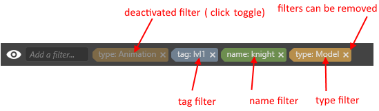
To add a filter, type in the filter bar and matching filters will be displayed. Click on the one you want to add it to the list of active filters.

Only the assets matching the active filters will be displayed in the asset view. Note that type filters are inclusive, while name and tag filters are exclusive.
Folder support in asset view
If the ‘Assets and folder in selected folder’ options is selected, the first level of sub-folder will be displayed in the asset view. You can drag and drop assets inside them. You can also copy/paste complete folder structure. 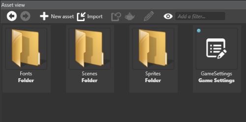
Copy-paste assets with their dependencies
You have now the ability to copy assets with their dependencies. To do that use the new entry ‘Copy with dependencies’ from the asset view context menu, or press Ctrl+Shift+C. 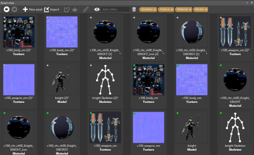 For example, if you copy/paste a model with its dependencies, you will get a copy of this model along with a copy of all its dependencies (skeleton, materials, textures)
Border and Center support in sprite sheet editor
For ‘Sprite2D’ sprites, you can move the position of the center by selecting the icon in the toolbar of the sprite editor. Grab and move the cross to the desired position.
For ‘UI’ sprites, you can change the borders by selecting the 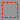 icon in the toolbar of the sprite editor. You can then resize each border (left, top, right and bottom) separately in the same way as the texture region, by grabbing and moving one of them. Note that the icon lets you ‘lock’or ‘unlock’ the sprite borders while resizing the texture region.
New built-in scripts
We added a few more built-in scripts with this release such as an FPS camera script and First player controller script. To use them, just click on “New Asset”, “Script source code”, select the desired script and attach it to an adequate entity.
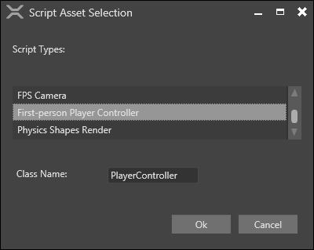Precompiled Sprite Fonts
Font rights are quite restrictive and it is quite common that only some persons of the project have access to the font files. This was preventing some people to build the game. To solve this problem, we created a new type of asset, the precompiled sprite fonts. It is an asset taking as input an image and containing all the glyph information required to render the set of character specified. Inside your games you can used it exactly like a standard sprite font. To generate a precompiled sprite font, the owner of the original font file just have to right click on an existing static font and choose “Generate Precompiled Font”.
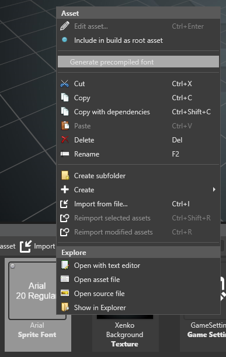Version 1.5.4-beta
Release date: 2016/03/03
Issues fixed
- Fix a certification issue remaining for Windows Universal Apps.
- Fix a problem with the selection of the Graphic Profile on INTEL graphic cards.
Version 1.5.3-beta
Release date: 2016/02/18
Issues fixed
- Fix a problem in the package upgrade erasing the content of shader and effect files.
- Fix a crash in the resolution of invalid relative paths preventing to load the project in the editor.
- Do not add pillar boxes when resizing the window of a landscape game under Windows 10 but readjust the size of the buffer.
- Replace the
MS Minchofont by an embedded free font in samples (The font is not available on every systems)
Version 1.5.2-beta
Release date: 2016/01/15
Issues fixed
Assets
- Added the missing XenkoDefaultFont required by the profiler system.
- The convex hull generation is now working along with the new Skeleton Asset.
Engine
- Fix problem occurring with debugging async functions (local variable gone, namespace ignored, step over broken).
- Fix the issues preventing from passing Windows 10 store certification.
- Add support for proper resizing in Windows Universal Apps.
Game Studio
- Fix issues with the displayed values of rotations changing after validation.
iOS
- The Connection Router script required to compile shaders on iOS devices has been fixed.
Enhancements
Assets
- Skybox compilation does not require a DX11 GPU anymore. We added DX10 support to ensure GameStudio works fine with less recent GPUs as well.
Engine
- Add support for OpenGLES devices that do not support packed depth-stencil-formats.
Game Studio
- Add the possibility to edit the 3 components of a vector simultaneously.
Version 1.5.1-beta
Release date: 2015/12/22
Issues fixed
Engine
- Fix LLVM AOT compilation in release configuration for iOS
Game Studio
- Fix a possible crash when using types with no base type in scripts (##342)
- Fix double-click on folder in asset picker window
- Fix settings of default IDE reset to null when it shouldn't.
- Fix the problem of the texture thumbnail not updating when modify the content of the source file.
- Creating an asset with a template can be properly undone. (##343)
Version 1.5.0-beta
Release date: 2015/12/17
Enhancements
Launcher
- Add a ‘reconnect’ button, in case the launcher was started in offline mode.
Game Studio
- The asset creation menu always displays all possible assets to create, and switches to a proper location when the currently selected location is invalid for the chosen asset type.
- Improve animation thumbnail and preview. Automatically detect and use the corresponding model.
- Improve asset filtering in the asset view. Filter tag can be added, disabled or removed at any time.
- Folders are displayed in the asset view.
- Assets can be sorted by last modification date.
- Add ability to copy/paste assets with their dependencies.
- Improve the sprite sheet editor. Resizing borders or moving the texture region behaves correctly, especially when reaching the borders of the image. Background outside of the selected texture region can be darkened.
- Sprite sheet preview can be displayed while the sprite sheet is being edited.
- Change message dialog style. Some confirmation dialogs (e.g. deleting an asset) can be disabled in the settings (under Interface/Ask confirmation…).
Games
- Use the application icons as window icon on windows
- Use AssamblyProductAttribute.Product as window title on windows
Graphics
- Add support for Gif load and jpeg save for Android
- Add the possibility to load images and textures as sRGB
- Add a static field in GraphicDevice to be able to get the current graphic platform
- Add optimized native code in SpriteBatch
Engine
- Use Color4 instead of Color in sprite components.
- Add support for toot motion on the TransformComponent
- Expose AnimationComponent.PlayingAnimations to the editor to be able to set entity initial animation easily.
- Make connection to editor for shader compilation fail if there is no connection back within 5 seconds
UI
- Add a tint color to the UI ImageElement.
Issues fixed
Assets
- Fix compiler regression that was taking more than 5s to complete compilation of assets
- Fix the log message displaying the name of missing referenced assets during asset compilation
- Fix crash in the asset compilation when Xenko installation path contains a '##' character.
- Fix shadow asset remaining after resolving asset naming collision.
Engine
- Prevent an exception to be thrown at each frame when the Model property of a ModelComponent is null.
- Use the ShaderProfile from GameSettings instead of the graphic device level as it is likely the profile used to compile shaders at build time.
Game Studio
- Fix a crash when trying to fetch the target asset of a reference that is null.
- Fix a bug in the edition of SpriteFont properties that was preventing to properly use system font
- Fix thumbnails of SpriteFont when using system font.
- Fix a crash when duplicating an entity in the scene editor.
- Fix renaming issue when duplicating an entity in the scene editor.
- Fix the problem dark thumbnails for textures in HDR mode.
- Fix gizmo settings not saved/reloaded properly.
- Fix copy/paste of folders in the solution explorer.
- Fix a crash in the sprite sheet editor when a source image was modified in an external editor.
- Fix a potential crash when the texture region is outside of the image.
- Fix a bug preventing to create a frame in the sprite editor when dropping a file.
- Fix a bug preventing to drop asset in an empty folder.
- Fix error when attempting to import animation from a model that doesn't have any.
- Fix incorrect size of full screen window when screen resolution has changed.
- Fix package dependency issue when removing a dependent package.
Rendering
- Fixed disappearing shadows due to wrong cascade distance calculation
Known Issues
- iOS has an outstanding crash issue after a few second on ARM64 iPhones. This is currently under investigation.